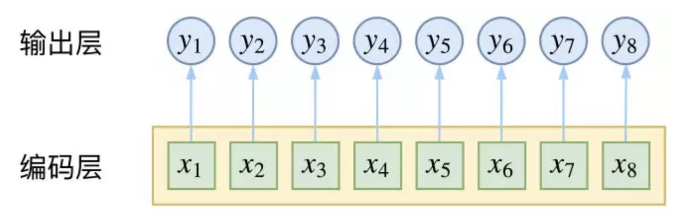
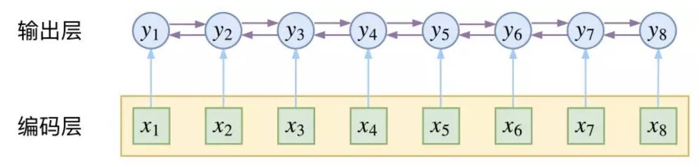

NCRF++学习笔记¶
文档学习¶
Readme.md¶
Introduction¶
序列标记模型在许多NLP任务中非常流行，例如命名实体识别（NER），词性（POS）标记和分词。最先进的序列标记模型主要利用具有输入字特征的CRF结构。 LSTM（或双向LSTM）是序列标记任务中流行的基于深度学习的特征提取器。并且由于更快的计算，也可以使用CNN。此外，单词中的特征对于表示单词也是有用的，可以通过字符LSTM或字符CNN结构或人类定义的神经特征来捕获单词。
NCRF ++是一个基于PyTorch的框架，可灵活选择输入特征和输出结构。使用NCRF ++的神经序列标记模型的设计可通过配置文件完全配置，该配置文件不需要任何代码工作。 NCRF ++可以被视为 CRF++ 的神经网络版本，这是一个著名的统计CRF框架。
该框架已被 ACL 2018 接受为 demo 论文。使用NCRF ++的详细实验报告和分析已被 COLING 2018 接受为最佳论文。
NCRF ++支持三个级别的不同结构组合：character sequence layer; word sequence layer and inference layer.
- 字符序列表示：字符LSTM，字符GRU，字符CNN和手工制作的单词特征。
- 单词序列表示：单词LSTM，单词GRU，单词CNN。
- 推理层：Softmax，CRF。
Requirement¶
Python: 2 or 3
PyTorch: 1.0
PyTorch 0.3 compatible version is here.
Advantages¶
- 完全可配置：可以使用配置文件设置所有神经模型结构。
- 最先进的系统性能：与最先进的模型相比，基于NCRF ++的模型可以提供相当或更好的结果。
- 灵活的特征：用户可以定义自己的特征和预训练的特征嵌入。
-
快速运行速度：NCRF ++利用完全批量操作，在GPU的帮助下使系统高效（> 1000sent / s用于训练，> 2000sents / s用于解码）
-
N best output: NCRF++ 支持
nbestdecoding (with their probabilities).
Usage¶
NCRF ++支持通过配置文件设计神经网络结构。该程序可以运行两种状态 训练和解码。 （示例配置和数据已包含在此存储库中）
In training status: python main.py --config demo.train.config
In decoding status: python main.py --config demo.decode.config
配置文件控制网络结构，I / O，训练设置和超参数。
Detail configurations and explanations are listed here.
NCRF ++设计为三层（如下所示）：字符序列层;单词序列层和推理层。通过使用配置文件，可以轻松复制大多数最先进的模型而无需编码。另一方面，用户可以通过设计自己的模块来扩展每一层（例如，他们可能想要设计除CNN / LSTM / GRU之外的其他神经结构）。我们的层设计使模块扩展方便，模块扩展的指令可以在 这里 找到。

- 图中的红色圆圈指word embedding，黄色指 charCNN/RNN 生成的 word embedding，灰色是自定义的 handcrafted 特征。
Data Format¶
- You can refer the data format in sample_data.
- NCRF++ supports both BIO and BIOES(BMES) tag scheme.
- Notice that IOB format (different from BIO) is currently not supported, because this tag scheme is old and works worse than other schemes Reimers and Gurevych, 2017.
- The difference among these three tag schemes is explained in this paper.
- I have written a script which converts the tag scheme among IOB/BIO/BIOES. Welcome to have a try.
Performance¶
Results on CONLL 2003 English NER task are better or comparable with SOTA results with the same structures.
CharLSTM+WordLSTM+CRF: 91.20 vs 90.94 of Lample .etc, NAACL16;
CharCNN+WordLSTM+CRF: 91.35 vs 91.21 of Ma .etc, ACL16.
By default, LSTM is bidirectional LSTM.
| ID | Model | Nochar | CharLSTM | CharCNN |
|---|---|---|---|---|
| 1 | WordLSTM | 88.57 | 90.84 | 90.73 |
| 2 | WordLSTM+CRF | 89.45 | 91.20 | 91.35 |
| 3 | WordCNN | 88.56 | 90.46 | 90.30 |
| 4 | WordCNN+CRF | 88.90 | 90.70 | 90.43 |
We have compared twelve neural sequence labeling models ({charLSTM, charCNN, None} x {wordLSTM, wordCNN} x {softmax, CRF}) on three benchmarks (POS, Chunking, NER) under statistical experiments, detail results and comparisons can be found in our COLING 2018 paper Design Challenges and Misconceptions in Neural Sequence Labeling.
Add Handcrafted Features¶
NCRF++ 集成了最先进的几个神经特征序列特征提取器：CNN (Ma .etc, ACL16), LSTM (Lample .etc, NAACL16) and GRU (Yang .etc, ICLR17). 此外，手工制作的特征已被证明在序列标记任务中很重要。 NCRF ++允许用户设计自己的特征，如大写，POS标签或任何其他特征（上图中的灰色圆圈）。用户可以通过配置文件配置自定义特征（特征嵌入大小，预训练特征嵌入等）。样本输入数据格式在 train.cappos.bmes 中，其中包括两个人为定义的特征[POS]和[Cap]（[POS]和[Cap]是两个示例，您可以为您的特征提供所需的任何名称，只需按照格式[xx]并在配置文件中配置相同名称的特征。）用户可以配置配置文件中的每个特征，通过使用
feature=[POS] emb_size=20 emb_dir=%your_pretrained_POS_embedding
feature=[Cap] emb_size=20 emb_dir=%your_pretrained_Cap_embedding
没有预训练嵌入的特征将被随机初始化。
Speed¶
NCRF ++使用完全批量计算实现，使其在模型训练和解码方面都非常有效。在GPU（Nvidia GTX 1080）和大批量大小的帮助下，使用NCRF ++构建的LSTMCRF模型分别在训练和解码状态下可达到1000个sents / s和2000个sents / s。

N best Decoding¶
传统的CRF结构仅解码具有最大可能性的一个标签序列（即1个最佳输出）。而NCRF ++可以提供大量选择，它可以解码具有 top n 概率的n个标签序列（即n-best output）。nbest 解码已得到几个流行的 统计 CRF框架的支持。然而据我们所知，NCRF ++是神经CRF模型中唯一支持nbest解码的工具包。
在我们的实现中，当 nbest = 10 时，在NCRF ++中构建的CharCNN + WordLSTM + CRF模型在CoNLL 2003 NER任务上可以给出97.47％的oracle F1值（当nbest = 1时F1 = 91.35％）。

Reproduce Paper Results and Hyperparameter Tuning¶
To reproduce the results in our COLING 2018 paper, you only need to set the iteration=1 as iteration=100 in configuration file demo.train.config and configure your file directory in this configuration file. The default configuration file describes the Char CNN + Word LSTM + CRF model, you can build your own model by modifing the configuration accordingly. The parameters in this demo configuration file are the same in our paper. (Notice the Word CNN related models need slightly different parameters, details can be found in our COLING paper.)
If you want to use this framework in new tasks or datasets, here are some tuning tips by @Victor0118.
Configuration.md¶
本文档与 demo.train.config 相对应
I/O¶
| 指令 | 解释 | 备注 |
|---|---|---|
| train_dir=xx | string (necessary in training). Set training file directory. | 训练集位置 |
| dev_dir=xx | string (necessary in training). Set dev file directory. | 开发集位置 |
| test_dir=xx | string . Set test file directory. | 测试集位置 |
| model_dir=xx | string (optional). Set saved model file directory. | 输出 模型存储位置 model_dir=lstmcrf 则 model 保存为lstm.0.model ，相关参数词典为lstm.dset |
| word_emb_dir=xx | string (optional). Set pretrained word embedding file directory. | 预训练词嵌入的位置 |
| raw_dir=xx | string (optional). Set input raw file directory. | 原始数据文件的位置 |
| decode_dir=xx | string (necessary in decoding). Set decoded file directory. | 输出 解码结果的位置 |
| dset_dir=xx | string (necessary). Set saved model file directory. | 模型参数词典保存的位置 |
| load_model_dir=xx | string (necessary in decoding). Set loaded model file directory. (when decoding) | 模型的位置 |
| char_emb_dir=xx | string (optional). Set pretrained character embedding file directory. | 预训练的字符嵌入文件的位置 |
| norm_word_emb=False | boolen. If normalize the pretrained word embedding. | 是否对预训练的词嵌入标准化 |
| norm_char_emb=False | boolen. If normalize the pretrained character embedding. | 是否对预训练的字符嵌入标准化 |
| number_normalized=True | boolen. If normalize the digit into 0 for input files. |
是否将数字标准化为输入文件的“0” |
| seg=True | boolen. If task is segmentation like, tasks with token accuracy evaluation (e.g. POS, CCG) is False; tasks with F-value evaluation(e.g. Word Segmentation, NER, Chunking) is True . | 如果任务是 segmentation，令牌准确度评估的任务（例如POS，CCG）为 False ; F值评估的任务（例如，Word Segmentation, NER, Chunking）为 True 。 |
| word_emb_dim=50 | int. Word embedding dimension, if model use pretrained word embedding, word_emb_dim will be reset as the same dimension as pretrained embedidng. | 词嵌入维度 (如果模型使用预训练单词嵌入，word_emb_dim将被重置为与预训练embedidng相同的维度) |
| char_emb_dim=30 | int. Character embedding dimension, if model use pretrained character embedding, char_emb_dim will be reset as the same dimension as pretrained embedidng. | 字符嵌入维度 (如果模型使用预训练单词嵌入，char_emb_dim将被重置为与预训练embedidng相同的维度) |
NetworkConfiguration¶
| 指令 | 解释 | 备注 |
|---|---|---|
| use_crf=True | boolen (necessary in training). Flag of if using CRF layer. If it is set as False, then Softmax is used in inference layer. | True : CRF; False : Softmax |
| use_char=True | boolen (necessary in training). Flag of if using character sequence layer. | True : 使用字符序列层 |
| word_seq_feature=XX | boolen (necessary in training): CNN/LSTM/GRU. Neural structure selection for word sequence. | 词序列特征提取模型：CNN/LSTM/GRU |
| char_seq_feature=CNN | boolen (necessary in training): CNN/LSTM/GRU. Neural structure selection for character sequence, it only be used when use_char=True. | 字符特征提取模型：CNN/LSTM/GRU |
| feature=[POS] emb_size=20 emb_dir=xx emb_norm=false | feature configuration. It includes the feature prefix [POS], pretrained feature embedding file and the embedding size. | 特征配置：feature=[特征名称] emb_size=20 emb_dir=xx emb_norm=false |
| feature=[Cap] emb_size=20 emb_dir=xx emb_norm=false | feature configuration. Another feature [Cap]. | 同上 |
| nbest=1 | int (necessary in decoding). Set the nbest size during decoding. | 设置 nbest 的 size |
TrainingSetting¶
| 指令 | 解释 | 备注 |
|---|---|---|
| status=train | string: train or decode. Set the program running in training or decoding mode. | train / decode 模式 |
| optimizer=SGD | string: SGD/Adagrad/AdaDelta/RMSprop/Adam. optimizer selection. | 优化器选择 |
| iteration=1 | int. Set the iteration number of training. | 迭代次数 |
| batch_size=10 | int. Set the batch size of training or decoding. | 批量大小 |
| ave_batch_loss=False | boolen. Set average the batched loss during training. | 是否设置 loss 为批量损失的均值 |
Hyperparameters¶
| 指令 | 解释 | 备注 |
|---|---|---|
| cnn_layer=4 | int. CNN layer number for word sequence layer. | 词序列层的CNN 层的深度，从而更好地学习长距离的依赖关系 |
| char_hidden_dim=50 | int. Character hidden vector dimension for character sequence layer. | 字符序列层的字符隐层向量的维度 |
| hidden_dim=200 | int. Word hidden vector dimension for word sequence layer. | 词序列层的词隐层向量的维度 |
| dropout=0.5 | float. Dropout probability. | Dropout 概率 |
| lstm_layer=1 | int. LSTM layer number for word sequence layer. | LSTM 层数 |
| bilstm=True | boolen. If use bidirection lstm for word seuquence layer. | 是否在词序列层中使用双向 LSTM |
| learning_rate=0.015 | float. Learning rate. | 学习率 |
| lr_decay=0.05 | float. Learning rate decay rate, only works when optimizer=SGD. | SGD 中的学习率衰减概率 |
| momentum=0 | float. Momentum | 动量值 |
| l2=1e-8 | float. L2-regulization. | L2 正则化参数 |
| gpu=True | boolen. If use GPU, generally it depends on the hardward environment. | 是否使用 GPU |
| clip= | float. Clip the gradient which is larger than the setted number. | 梯度裁剪的设定数值 |
Extension.md¶
Module Extension.¶
If you want to extend character sequence layer: please refer to the file charlstm.py.
If you want to extend word sequence layer: please refer to the file wordsequence.py.
More details will be updated soon.
Hyperparameter_tuning.md¶
Hyperparamter tuning on CoNLL 2003 English NER task¶
- 如果您使用大批量（例如batch_size> 100），您最好设置
avg_batch_loss = True以获得稳定的训练过程。对于小批量，avg_batch_loss = True将更快收敛，有时会提供更好的性能（例如CoNLL 2003 NER）。 - 如果使用100-d预训练单词向量 此处 而不是50-d预训练单词向量，则可以在CoNLL 2003英语数据集上获得更好的性能。
- 如果要编写脚本来调整超参数，可以使用
main_parse.py在命令行参数中设置超参数 - 模型性能对
lr敏感，需要在不同结构下仔细调整：- Word level LSTM models (e.g. char LSTM + word LSTM + CRF) would prefer a
lraround 0.015. - Word level CNN models (e.g. char LSTM + word CNN + CRF) would prefer a
lraround 0.005 and with more iterations. - You can refer the COLING paper "Design Challenges and Misconceptions in Neural Sequence Labeling" for more hyperparameter settings.
- Word level LSTM models (e.g. char LSTM + word LSTM + CRF) would prefer a
源码学习¶
架构梳理¶
框架首先将所有的数据处理的部分，都放在了模型之外，模型的输入均为处理后的 word / char 的 index
模型分为三层：
- char sequence layer : 支持预训练以及随机初始化两种方式，获得 char-level embedding ，再得到 word embedding。方法包括 charRNN, charCNN，并且可以同时使用 (concatenate embedding_dim 即可)
- word sequence layer : 支持预训练以及随机初始化两种方式，获得 word-level embedding，而后与 char sequence layer 得到的 word embedding 以及 handcrafted feature (如 POS ) 的embedding（同样支持两种方式）进行 concatenate，最后得到 hybrid 的 word embedding，再经过 多层 CNN / LSTM / GRU ，得到最终的 hidden_state
- inference layer : 支持 CRF 与 Softmax 两种方式
流程梳理¶
框架首先读取用户定义好的 config 文件，其中包括了 I/O, Network, Training, Hyperparameters 四部分的参数设置。用户可以通过修改 config 文件，或是以 --parameter value 的形式在运行时修改。运行指令如下：
python main.py --config train.config
training status
首先读取初始化运行参数，读取配置覆盖初始参数，而后对数据进行初步处理并读取/初始化所需的 embedding ，包括
- 建立 feature 的字母表 alphabet 和 训练集 / 开发集 / 测试集 的 word / char / label / feature_list 的字母表
- 字母表主要是包括存储 instance 的 list 以及 \{ \mathbf{key:instance}, \mathbf{value:index}\} 的 dict
- 建立 instance_text 和 instance_Ids 两个 list ，其每一项为
[words, features, chars, labels]和[word_Ids, feature_Ids, char_Ids, label_Ids]（以 NER 任务为例，特征使用的是 POS），分别是 sequence 中的所有单词构成的[‘good’]，所有特征构成的[‘JJ’]，所有字符构成的[[‘g’, ‘o’, ’o’, ‘d’]]，所有 label 构成的['O']，以及上述内容在各自的字母表中对应的 index 构成的xxx_Ids - 对建立好的 word / char / label / feature_list 的字母表，遍历字母表中的所有 instance ，分别建立 Embedding 矩阵。读取 word / char / feature 的 pretrain embedding，如果未指定 pretrain embedding 的文件位置，那么均随机初始化，否则会分为以下三种情况分别处理
- perfect match : 如果在 pretrain embedding 中找到了字母表里的 instance ，则将其 embedding 对应赋值，否则进行下一步
- case_match : 如果在 pretrain embedding 中找到了字母表里的 instance 的 lower 版本的 embedding，则同样对应赋值，否则进行下一步
- not_match : 如果在 pretrain embedding 中没有找到字母表里的 instance 的 raw / lower 版本，则随机初始化
接着处理模型各层的输入数据（ batch_size 自定义），包括 batch_word, batch_features, batch_wordlen, batch_wordrecover, batch_char, batch_charlen, batch_charrecover, batch_label, mask
- 将 instance_Ids 提取出 batch 个 item，每个 item 都是
[words, features, chars, labels]构成的嵌套 list - 将 batch 数据中四类数据分别抽取建立为 list ，包括
words, features, chars, labels，而后建立起对应的 zeros Tensor 以及 mask Tensor，并统计最长句子长度等信息 - 分别在 zeros Tensor 中填充
words, labels, mask, features的 Tensor
Pytorch 中提供了 torch.nn.utils.rnn.PackedSequence 的相关 API，输入时需要将 sequence 按照真实长度降序排列，并输入 sequence 以及其对应的真实长度，于是：
python # 统计 batch 中每个 sequence 的长度 word_seq_lengths = torch.LongTensor(list(map(len, words))) # 降序排序后获得其排序结果以及该结果中的对应每一项在原序列中的 index word_seq_lengths, word_perm_idx = word_seq_lengths.sort(0, descending=True)
举个例子：
- 原序列 word_seq_lengths = [9, 7, 11]，那么排序后的返回值为
- word_seq_lengths = [11, 9, 7] ，word_perm_idx = [2, 0, 1]
那么我们就可以将 length 对应的 size 为 \text{batch_size} \times \text{max_seq_len} 的 word_seq_tensor 以及 label_seq_tensor 等进行重排列，即
- word_seq_tensor = word_seq_tensor[word_perm_idx] 那么现在的 word / label / length 就是一一对应的了，feature, mask 也是同理操作
如上操作后，sequence 中的 word-level 的 padding 以及排序工作就完成了，随后进行 char-level 的 padding 以及排序工作
- 这里的 word-level 的 padding，是对每个 batch 的每个句子，都填充为最长的句子长度
首先将原本的 chars 列表进行 padding ：
- chars list 中的chars[3] 如下图所示

- 可以看到 chars[3] 中的为一个 sequence ，其中每一项均为 sequence 中的某一个单词，如 chars[3] 的第 8 项即为一个长度为 2 的单词，由字符 15 和 40 组成
- 先对每个 sequence 进行 padding，保证 sequence 的长度均为 max_seq_len
- 即对 chars[3] 这一 sequence 末尾，添加[[0], [0], [0], …… , [0]]
- 而后对本 batch 内的所有 sequence 中的所有 word 统计得到最长单词长度 max_word_len
- 初始化 size 为
batch_size, max_seq_len, max_word_len的 zeros Tensorchar_seq_tensor，统计当前 chars 中所有单词的长度，获得 size 为batch_size, max_seq_len的 char_seq_lengths - 将每个 sequence 的每个 word 的每个 char_Id 填入
char_seq_tensor中这样就完成了 char-level 的 padding 工作
接着我们我们对数据做进一步的处理
- 首先通过 word_perm_idx 将序列的顺序调整的与 word 和 label 的顺序一致，然后是对 char_seq_tensor, char_seq_lengths 进行压实操作，将其 size 调整为
(batch_size * max_seq_len, max_word_len)和(batch_size * max_seq_len,) -
接着进行同样的排序与调序操作，将 word 的顺序调整为按照 word_len 降序排列
- 这是我们应该注意到，单词的顺序在 char sequence layer 中被打乱了，我们在经过charCNN / charRNN 的处理后，得到的输出需要输入到 word sequence layer 中，顺序是不一致的，需要在输出时将顺序调整回去
-
回到之前的例子：
- 原序列 word_seq_lengths = [9, 7, 11]，那么排序后的返回值为 word_seq_lengths = [11, 9, 7] ，word_perm_idx = [2, 0, 1]
- 我们对 word_perm_idx 进行升序排列，得到返回值为 [0, 1, 2] 和 [1, 2, 0]，这时候令
word_seq_lengths = word_seq_lengths[1, 2, 0]，我们就会发现 word_seq_lengths 变回了原序列 - 当 char sequence layer 将其获得的每个 word 的 embedding 输出至 word sequence layer 时，需要使用之前保存的 char_seq_recover 将 word 的顺序还原
至此，各层所需的输入数据都准备完毕。

运行时，模型首先需要完成对 char sequence layer 的运算，获得 char-level 的 word embedding，然后与 word embedding 和 feature embedding 进行 concatenate，得到最终的 word embedding，再通过多层的 LSTM / GRU / CNN 得到最终的 size 为 batch_size, seq_len, classes 的特征向量
最后的 inference layer 可以有两种选择：CRF / Softmax ，这里我们先讨论 Softmax 的方式。对特征向量的最后一维做 log_softmax ，而后计算其 NLLLoss 并将其最大值对应的 class 作为分类结果。
CRF 笔记¶
条件随机场(Conditional Random Fields, 以下简称CRF)是给定一组输入随机变量条件下另一组输出随机变量的条件概率分布模型。其特点是假设输出随机变量构成马尔科夫随机场。条件随机场可以用于不同的预测问题，本文讨论的是其在标注问题中的应用，因此主要讲述线性链条件随机场。这时，问题变成由输入序列对输出序列预测的判别模型，形式为对数线性模型，其学习方法通常是极大似然估计或正则化的极大似然估计。
什么样的问题需要CRF模型¶
对于 A 的一天从早到晚的一系列照片，我们想要知道每张照片对应的活动，如果我们用传统的分类思路去做，即对每张照片分别预测其活动类别，这就忽略了活动之间的关联性和内在约束，比如对于一张 A 闭着嘴巴的照片，如果前一张照片是 A 在吃东西的照片，那么此时 A 就是在咀嚼；如果前一张照片是 A 在唱歌的照片，那么此时 A 就是在唱歌。
这就需要我们考虑 相邻数据的标记信息 。自然语言处理中的**词性标注**(Part-Of-Speech Tagging)正是此类问题的经典任务。
随机场，马尔科夫随机场，条件随机场¶
- 随机场：当给每一个位置中按照某种分布随机赋予相空间的一个值之后，其全体就叫做随机场。我们不妨拿种地来打个比方。其中有两个概念：位置（site），相空间（phase space）。“位置”好比是一亩亩农田；“相空间”好比是种的各种庄稼。我们可以给不同的地种上不同的庄稼，这就好比给随机场的每个“位置”，赋予相空间里不同的值。所以，俗气点说，随机场就是在哪块地里种什么庄稼的事情。
- 马尔科夫随机场：马尔科夫随机场是随机场的特例，它假设随机场中某一个位置的赋值仅仅与和它相邻的位置的赋值有关，和与其不相邻的位置的赋值无关。
- 马尔科夫性质：它指的是一个随机变量序列按时间先后关系依次排开的时候，第N+1时刻的分布特性，与N时刻以前的随机变量的取值无关。拿天气来打个比方。如果我们假定天气是马尔可夫的，其意思就是我们假设今天的天气仅仅与昨天的天气存在概率上的关联，而与前天及前天以前的天气没有关系。其它如传染病和谣言的传播规律，就是马尔可夫的。
- CRF是马尔科夫随机场的特例，它假设马尔科夫随机场中只有X和Y两种变量，X一般是给定的，而Y一般是在给定X的条件下的输出。这样马尔科夫随机场就特化成了条件随机场。设X与Y是随机变量，P(Y|X)是给定X时Y的条件概率分布，若随机变量Y构成的是一个马尔科夫随机场，则称条件概率分布P(Y|X)是条件随机场。
Softmax 与 CRF¶

上图为用 CNN 或者 RNN 对序列进行编码后，使用 Softmax 作为分类器，完成 POS 任务。
以 RNN 为例，对于 t 时刻来说，输出层 yt 受到隐层 ht（包含上下文信息）和输入层 xt（当前的输入）的影响，但是yt和其他时刻的yt'是相互独立的，并没有直接考虑输出的上下文关系。

上图为使用 CRF 进行 POS 时，由 CRF 对输出层的上下文关系进行直接关联，即 CRF 在输出端显式地考虑了上下文关联。
公式推导¶
CRF 的真正精巧的地方，是它以路径为单位，考虑的是路径的概率。
假如一个输入有 n 帧，每一帧的标签有 k 种可能性，那么理论上就有 k^n 中不同的结果标签序列。我们可以将它用如下的网络图进行简单的可视化。在下图中，每个点代表一个标签的可能性，点之间的连线表示标签之间的关联，而每一种标注结果，都对应着图上的一条完整的路径。

而在序列标注任务中，我们的正确答案是一般是唯一的。比如“今天天气不错”，如果对应的分词结果是“今天/天气/不/错”，那么目标输出序列就是 bebess，除此之外别的路径都不符合要求。
换言之，在序列标注任务中，我们的研究的基本单位应该是路径，我们要做的事情，是从 k^n 条路径选出正确的一条，那就意味着，如果将它视为一个分类问题，那么将是 k^n 类中选一类的分类问题。
逐帧 softmax 和 CRF 的根本区别
- 前者将序列标注看成是 n 个 k 分类问题，后者将序列标注看成是 1 个 k^n 分类问题
具体来讲，在 CRF 的序列标注问题中，我们要计算的是条件概率：
为了得到这个概率的估计，CRF 做了两个假设：
假设一：该分布是指数族分布
这个假设意味着存在函数 f(y_1,…,y_n;x)，使得
其中 Z(x) 是归一化因子，因为这个是条件分布，所以归一化因子跟 x 有关。这个 f 函数可以视为一个打分函数，打分函数取指数并归一化后就得到概率分布。
假设二：输出之间的关联仅发生在相邻位置，并且关联是指数加性的
下式为链式结构的条件概率（即 x 与 y 的结构相同）
其中，f_{1}\left(\mathbf{x}, y_{t}\right) 为状态特征，与位置 t 相关；f_{2}\left(\mathbf{x}, y_{t}, y_{t+1}\right) 为转移特征。
损失函数
极大似然估计 $$ L(x) = -\log P\left(y_{1}, \ldots, y_{n} | x\right) \ = log(Z(x)) -\left(\sum_{t=1}^{T} \theta_{1}^{\mathrm{T}} f_{1}\left(\mathbf{x}, y_{t}\right)+\sum_{t=1}^{T-1} \theta_{2}^{\mathrm{T}} f_{2}\left(\mathbf{x}, y_{t}, y_{t+1}\right)\right) $$ 预测问题
模型训练完成后，如何根据输入找出最优路径？同样的，这也是一个从 k^n 条路径中选最优的问题，而因为马尔可夫假设的存在，它可以转化为一个动态规划问题，用 viterbi 算法解决，计算量正比于 n。
递归思想就是：一条最优路径切成两段，那么每一段都是一条（局部）最优路径
Pytorch API¶
我们先来介绍几个需要用到的 API
gather¶
理解：将 input 按照 dim 指定的维度以及 index 中指定的顺序，取出的对应值
torch.gather(input, dim, index, out=None, sparse_grad=False) → Tensor
Gathers values along an axis specified by dim.
For a 3-D tensor the output is specified by:
out[i][j][k] = input[index[i][j][k]][j][k] # if dim == 0
out[i][j][k] = input[i][index[i][j][k]][k] # if dim == 1
out[i][j][k] = input[i][j][index[i][j][k]] # if dim == 2
If input is an n-dimensional tensor with size (x_0, x_1..., x_{i-1}, x_i, x_{i+1}, ..., x_{n-1}) and dim = i, then index must be an n-dimensional tensor with size (x_0, x_1, ..., x_{i-1}, y, x_{i+1}, ..., x_{n-1}) where y \geq 1 and out will have the same size as index.
Parameters
- input (Tensor) – the source tensor
- dim (int) – the axis along which to index
- index (LongTensor) – the indices of elements to gather
- out (Tensor, optional) – the destination tensor
- sparse_grad (bool,optional) – If
True, gradient w.r.t.inputwill be a sparse tensor.
Example:
>>> t = torch.tensor([[1,2],[3,4]])
>>> torch.gather(t, 1, torch.tensor([[0,0],[1,0]]))
tensor([[ 1, 1],
[ 4, 3]])
scatter¶
将 src 的值按照 dim 和 index 的要求填入 self 中
scatter_(dim, index, src) → Tensor
Writes all values from the tensor src into self at the indices specified in the index tensor. For each value in src, its output index is specified by its index in src for dimension != dim and by the corresponding value in index for dimension = dim.
For a 3-D tensor, self is updated as:
self[index[i][j][k]][j][k] = src[i][j][k] # if dim == 0
self[i][index[i][j][k]][k] = src[i][j][k] # if dim == 1
self[i][j][index[i][j][k]] = src[i][j][k] # if dim == 2
This is the reverse operation of the manner described in gather().
self, index and src (if it is a Tensor) should have same number of dimensions. It is also required that index.size(d) <= src.size(d) for all dimensions d, and that index.size(d) <= self.size(d) for all dimensions d != dim.
Moreover, as for gather(), the values of index must be between 0 and self.size(dim) - 1 inclusive, and all values in a row along the specified dimension dim must be unique.
Parameters
- dim (int) – the axis along which to index
- index (LongTensor) – the indices of elements to scatter, can be either empty or the same size of src. When empty, the operation returns identity
- src (Tensor) – the source element(s) to scatter, incase value is not specified
- value (float) – the source element(s) to scatter, incase src is not specified
Example:
>>> x = torch.rand(2, 5)
>>> x
tensor([[ 0.3992, 0.2908, 0.9044, 0.4850, 0.6004],
[ 0.5735, 0.9006, 0.6797, 0.4152, 0.1732]])
>>> torch.zeros(3, 5).scatter_(0, torch.tensor([[0, 1, 2, 0, 0], [2, 0, 0, 1, 2]]), x)
tensor([[ 0.3992, 0.9006, 0.6797, 0.4850, 0.6004],
[ 0.0000, 0.2908, 0.0000, 0.4152, 0.0000],
[ 0.5735, 0.0000, 0.9044, 0.0000, 0.1732]])
>>> z = torch.zeros(2, 4).scatter_(1, torch.tensor([[2], [3]]), 1.23)
>>> z
tensor([[ 0.0000, 0.0000, 1.2300, 0.0000],
[ 0.0000, 0.0000, 0.0000, 1.2300]])
masked_select¶
从 input 中选出 mask 中为 1 的对应位置的值，拼为新的 Tensor 并返回
torch.masked_select(input, mask, out=None) → Tensor
Returns a new 1-D tensor which indexes the input tensor according to the binary mask mask which is a ByteTensor.
The shapes of the mask tensor and the input tensor don’t need to match, but they must be broadcastable.
NOTE
The returned tensor does not use the same storage as the original tensor
Parameters
- input (Tensor) – the input data
- mask (ByteTensor) – the tensor containing the binary mask to index with
- out (Tensor, optional) – the output tensor
Example:
>>> x = torch.randn(3, 4)
>>> x
tensor([[ 0.3552, -2.3825, -0.8297, 0.3477],
[-1.2035, 1.2252, 0.5002, 0.6248],
[ 0.1307, -2.0608, 0.1244, 2.0139]])
>>> mask = x.ge(0.5)
>>> mask
tensor([[ 0, 0, 0, 0],
[ 0, 1, 1, 1],
[ 0, 0, 0, 1]], dtype=torch.uint8)
>>> torch.masked_select(x, mask)
tensor([ 1.2252, 0.5002, 0.6248, 2.0139])
masked_scatter_¶
将 mask 为 1 的对应 source 中的值复制到 self 中
masked_scatter_(mask, source)
Copies elements from source into self tensor at positions where the mask is one. The shape of maskmust be broadcastable with the shape of the underlying tensor. The source should have at least as many elements as the number of ones in mask
Parameters
- mask (ByteTensor) – the binary mask
- source (Tensor) – the tensor to copy from
NOTE
The mask operates on the self tensor, not on the given source tensor.
masked_fill_¶
将 mask 为 1 的 self 中的对应位置的值改为 value
masked_fill_(mask, value)
Fills elements of self tensor with value where mask is one. The shape of mask must be broadcastable with the shape of the underlying tensor.
Parameters
- mask (ByteTensor) – the binary mask
- value (float) – the value to fill in with
CRF 源码解析¶
现在来看 CRF ，CRF 考虑的不是每次转移时的最优概率，考虑的整体序列的可能性。
Previous_to \to current_from
CRF 的核心是它不像LSTM等模型，能够考虑长远的上下文信息，它更多考虑的是整个句子的局部特征的线性加权组合（通过特征模版去扫描整个句子）。关键的一点是，CRF的模型为p(y | x, w)，注意这里y和x都是序列，它有点像list wise，优化的是一个序列y = (y1, y2, …, yn)，而不是某个时刻的yt，即找到一个概率最高的序列y = (y1, y2, …, yn)使得p(y1, y2, …, yn| x, w)最高，它计算的是一种联合概率，优化的是整个序列（最终目标），而不是将每个时刻的最优拼接起来，在这一点上CRF要优于LSTM。
转移矩阵的 [i, j] 代表的是由状态 i 转移到状态 j 的可能性
注意，CRF 中的 tag_size 是真实的 tag_size + 2
_calculate_PZ(self, feats, mask)¶
首先我们将获得的 size 为 batch_size, seq_len, tag_size 的特征向量调整为seq_len, batch_size, tag_size ，方便随后依时间步访问序列。
而后再调整为seq_len * batch_size, 1, tag_size，再扩展成为 seq_len * batch_size, tag_size, tag_size 与转移矩阵相加得到 scores 。
- 可以理解成是将通过 model 获得到的每个时间步的所有的 tag 的可能性都加到转移矩阵之上，即当我们按时间步遍历每个时间步上的 size 为
batch_size, tag_size, tag_size的 cur_values 矩阵时，这里的矩阵是由原始的转移矩阵 + 之前 model 得到的每一时间步上的 word 的每种 tag 的可能性。这里我们将特征向量 feature 从一个行向量(不看 batch_size )扩展为一个矩阵，其实就是不管 start 状态是什么，转移到 j 状态的可能性都会加上 扩展前的 feature[j]。
而在每次随时间步的迭代中，我们都会将前一时间步传来的 size 为 batch_size, tag_size, 1 的 partition 数组，扩展为 batch_size, tag_size, tag_size 并加上 cur_values 。
- 第一次迭代中，partition 是由
inivalues[:, START_TAG, :].clone().view(batch_size, tag_size, 1得到的，其含义是 start_tag 之后的下一个 tag 的概率值，也就是当前时间步对应的 word 的 tag 的可能性。将这一 列向量 扩展后并与 cur_values 相加后，相当于每一行的各个数值都加上了同一值，也就是从状态 i 到其他任何状态都加上了 inivalues[START_TAG, i] (不看 batch_size )。- 这是因为这一数值的含义是从 start_tag 到状态 i 的可能性，也就是当前状态为 i 的可能性。
- 那么 cur_values 需要将由状态 i 出发的所有状态 j 的可能性都增加这一数值，即cur_values[i] = inivalues[START_TAG, i].view(1, tag_size) + cur_values[i]。对每行分别处理一次，经过这样的 tag_size 次运算，我们就可以得到一个新的、考虑到前一状态转移矩阵的，新的状态转移矩阵。
- 接下来我们需要对这一矩阵进行处理，得到新的 partition 传递给下一次的迭代。我们先计算矩阵每一列的最大值，构成一个行向量 max_value ，max_value[j] 含义是下一状态为 j 的最大转移可能性， 将其拓展为和输入的 partition 一样的 size 后用 partition - max_value，矩阵的所有值都是非正数，逐元素作用 exp 函数将其按列 sum (第 i 列的和的意义是下一状态为 i 的可能性之和) ，逐元素作用 log 函数，最终得到的新的矩阵 temp 是一个行向量(不看 batch_size )，temp[j] 代表的是转移到状态 j 的可能性之和。再将其与 max_score相加，得到最终的 cur_partition。
- 需要注意的是，上述过程未提及 mask 步骤，实际操作中需要使用 mask 操作完成对 partition 的更新
- 即，将 cur_partition 中对应 mask 为 1 的取出并拼接为一维的 masked_cur_partition ，再将masked_cur_partition 中 更新到 partition 的对应位置，获得新的 partition
- 遍历完序列后，得到
final_partition = cur_partition[:, STOP_TAG]，即各个状态转移到 stop_tag 的可能性，求得其 sum 并返回 sum 与 scores
_score_sentence(self, scores, mask, tags)¶
而今我们已经获得了 forward_score, scores ，接下来继续计算 gold_score
- tags 的 size 为 (batch, seq_len) ，存放的是每个 batch 内每个 sequence 的对应位置的 tag 类型。为了能够从 scores 中取出对应的 tg_energy，做了如下处理
- 首先将 size 为 (seq_len, batch, tag_size, tag_size) 的 scores 调整为 (seq_len, batch, tag_size * tag_size)
- 接着将 tags 的数值调整为
new_tags[:, idx] = tags[:, idx - 1] * tag_size + tags[:, idx]，此时的矩阵存储的数值正和 scores 矩阵压缩后的对应位置一致，即将 from_tag & to_tag 的信息存储在了这一数值中，new_tags 的 size 为 (batch_size, seq_len) - 将 new_tags 交换 0 1 维并调整为 (seq_len, batch_size, 1)，然后从 scores 中取出对应的 tg_energy ，size 为 (seq_len, batch_size)
- 再使用 mask 矩阵过滤一遍
- 取出转移矩阵中所有 tag 变为 STOP_TAG 的概率值并扩展为 (batch_size, tag_size) 作为 end_transition
- 通过对 size 为 (batch, seq_len) 的 mask 的每行求和，得到每个 sequence 的 length，再从原 tags 中取出每个 sequence 的最后一个 tag 的 ID 形成 size 为 (batch_size, 1) 的 end_ids
- 接着从 end_transition 中取出 end_ids 对应的 end_energy
- 对 tg_energy 和 end_energy 分别求和并相加，得到 gold_score
_viterbi_decode(self, feats, mask)¶
现在我们来看 viterbi_decode
- 首先和之前 _calculate_PZ 的计算过程类似，得到 scores 矩阵后进行遍历。不同之处在于，需要记录所有的 partition 以及 cur_bp 分别保存在 partition_history 和 back_points ，并且计算方式为
partition, cur_bp = torch.max(cur_values, 1)，此外 mask 需要 reverse ，即mask = (1 - mask.long()).byte()，此时 mask 中为 1 的部分表示 padding- partition 为每一时间步上的各个 to_target 的最大可能性
- cur_bp 为 partition 的每个值的 from_target
- 再通过 mask 将 cur_bp 中mask 为 1 的对应位置赋值为 0
- 接着，通过 length_mask 获得 last_position 即每个 sequence 的结束位置的 index，再从 partition_history 中取出 last_partition ，与转移矩阵 transitions 相加，得到序列的结尾处的转移矩阵 last_values ，而后求得其每列的最大值对应的 index ，再取出 STOP_TAG 对应的列，就获得了 size 为 (batch_size) 的pointer ，即最有可能转移至 STOP_TAG 的 from_target 。再将这一 from_target 放到 back_points 的末尾
- 最后计算 decode_idx，用于在 decode 阶段解析得到 decoded sequence
- pointer 是 decode_idx 的最后一项，因为其保存的是最有可能转移至 STOP_TAG 的 from_target ，即 end_id
- 倒序解码时，后一时间步的 pointer 即为当前时间步的 to_target 了，所以对应从 back_points 中取得其 from_target 并保存在 decode_idx 中，以此类推
_viterbi_decode_nbest(self, feats, mask, nbest)¶
- 首先和 _calculate_PZ 的计算过程类似，获得 scores 矩阵，再取出 start_tag 之后的下一个 tag 的概率值，并扩展为 (batch_size, tag_size, nbest) ，在添加到 partition_history 中，此时 idx 为 0。此外 mask 需要 reverse ，即
mask = (1 - mask.long()).byte()，此时 mask 中为 1 的部分表示 padding - 接着遍历 scores
- 第一次遍历时
- idx 已经为 1 , 将 cur_values 与 partition 相加获得 size 为 (batch_size, tag_size, tag_size) 的 新 cur_values
- 接着取出 cur_values 中的 topk dim=1 的排序结果作为新的 partition 以及对应的 index -- cur_bp，即获得了下一状态的 topk 的可能性以及对应的 from_target ，size 均为 (batch_size, nbest, tag_size)
- 将 cur_bp 的所有值都 * nbest ，与后续的 index 一致
- 将 partition 和 cur_bp 的 1 2 维对调，size 变为 (batch_size, tag_size, nbest)，并将 partition 保存在 partition_history 中
- 再通过 mask 将 cur_bp 中mask 为 0 的对应位置赋值为 0，并将 cur_bp 保存在 back_points 中
- 其他时候
- \text{idx} \gt 1 ，将 cur_values 调整为 (batch_size, tag_size, 1, tag_size) 并扩展为 (batch_size, tag_size, nbest, tag_size) ，将 partition 调整为 (batch_size, tag_size, nbest, 1) 并扩展为 (batch_size, tag_size, nbest, tag_size) ，再将两者相加，获得新的 cur_values 并调整size 为 (batch_size, tag_size * nbest, tag_size)
- 这里的两次扩展：对于 nbest 而言，cur_values 是不变的，故可以直接拓展，而 partition 调整为 (batch_size, tag_size, nbest, 1) 后的含义是上一时间步作为 to_target 的每种 tag 的 topk 的概率值，即当前时间步的每一种 tag 作为 from_target 的 topk 的概率值，扩展后相当于 topk 中每个 topn 对应的 (tag_size, tag_size) 的转移矩阵，这里的转移矩阵是由 (tag_size, 1) 的列向量扩展而来的，相当于无论当前时间步的 to_target 是什么， 特定 from_target 的转移概率是一样的
- 相加后调整为 (batch_size, tag_size * nbest, tag_size)
- 接着取出 cur_values 中的 topk dim=1 的排序结果作为新的 partition 以及对应的 index -- cur_bp，即获得了下一状态的 topk 的可能性以及对应的 from_target ，size 均为 (batch_size, nbest, tag_size)
- 由于已经将 size 调整为 (batch_size, tag_size * nbest, tag_size) ，所以 topk 的排序范围是 tag_size * nbest ，即对记录的 tag_size 个 size 为 [nbest, tag_size] 的转移矩阵纵向连接形成 (tag_size * nbest, tag_size) 的矩阵，而后对每列的 topk 取出数值与 index
- 这里的 index 的范围是 [0, tag_size * nbest - 1]，index / nbest 就可以得到范围为 [0, tag_size - 1] 的真实的 index ，即 from_target
- 例如from_target 为 5 的 top2 的 nbest 下的 index 就为 nbest * 5 + 2， index / nbest 后即可得到 from_target = 5
- 将 partition 和 cur_bp 的 1 2 维对调，size 变为 (batch_size, tag_size, nbest)，并将 partition 保存在 partition_history 中
- 再通过 mask 将 cur_bp 中mask 为 0 的对应位置赋值为 0，并将 cur_bp 保存在 back_points 中
- \text{idx} \gt 1 ，将 cur_values 调整为 (batch_size, tag_size, 1, tag_size) 并扩展为 (batch_size, tag_size, nbest, tag_size) ，将 partition 调整为 (batch_size, tag_size, nbest, 1) 并扩展为 (batch_size, tag_size, nbest, tag_size) ，再将两者相加，获得新的 cur_values 并调整size 为 (batch_size, tag_size * nbest, tag_size)
- 第一次遍历时
- 获得了 size 为 (batch_size, seq_len, nbest, tag_size) 的 partition_history，通过 length_mask 获得 size 为 (batch_size, 1, tag_size, nbest) 的 last_position，再从 partition_history 取出 sequence 末尾得到 last_partition 并调整其 size 为 (batch_size, tag_size, nbest, 1)，再扩展为 (batch_size, tag_size, nbest, tag_size) 并与转移矩阵 transitions 相加，得到序列的结尾处的转移矩阵 last_values
- 接着与遍历 scores 时类似，取出压缩后的 end_partition 和 end_bp 并取出 STOP_TAG 对应的矩阵，就获得了 size 为 (batch_size, nbest) 的pointer ，即最有可能转移至 STOP_TAG 的 from_target 。再将这一 from_target 放到 back_points 的末尾
- 最后计算 decode_idx，用于在 decode 阶段解析得到 decoded sequence
- pointer 是 decode_idx 的最后一项，因为其保存的是最有可能转移至 STOP_TAG 的 from_target ，即 end_id ，但由于之前已将 index 压缩，所以
decode_idx[-1] = pointer.data / nbest，从而获得真正的 index - 倒序解码时，后一时间步的 pointer 即为当前时间步的 to_target 了，所以对应从 back_points 中取得其 from_target 并 / nbest，然后保存在 decode_idx 中，以此类推
- 注意，此处的 pointer 需要保存
the last end nbest ids for non longest- 所有的 back_points 保存的都是经过 mask 处理的 tag_id ，padding 的 tag_id 均为 0
- 对于 _viterbi_decode 的解码过程，pointer 扩展为 (batch_size, 1, tag_size) 后成为 insert_last 并放在 sequence 的 last_position 的位置，所以对于某一 sequence 而言，不管到达这一位置的 pointer 的对应位置是几，只要到达了该 sequence 的最后一个位置，都会得到其 tag，从而完成对应的解码
- 对于 nbest 时的解码过程，需要考虑 n 种情况，在解码的第一次更新 pointer 时，所有长度小于最大长度的 sequence 的 pointer 都会变为 0，而由于 back_points[idx] 被调整为 (batch_size, tag_size * nbest)， 无法对每个 nbest 都访问 0 以获得其 last end nbest ids ，压缩后所有的 0 都只能访问到同一个值，这只是 top1 的 last end id，那么就会丢失 last end nbest ids。所以需要将会被 0 覆盖掉的 last end nbest ids 保存并重新覆盖
- 使用的第一个 pointer 是所有 sequence 的最后一个 tag_id，即使 tag_id 并不是 back_points[idx] 的 to_target 也没关系，取得的 from_target 仍然会因为之前的 mask 处理 而为 0；随后的 pointer 亦然
- pointer 是 decode_idx 的最后一项，因为其保存的是最有可能转移至 STOP_TAG 的 from_target ，即 end_id ，但由于之前已将 index 压缩，所以
Reference¶
《统计学习方法》